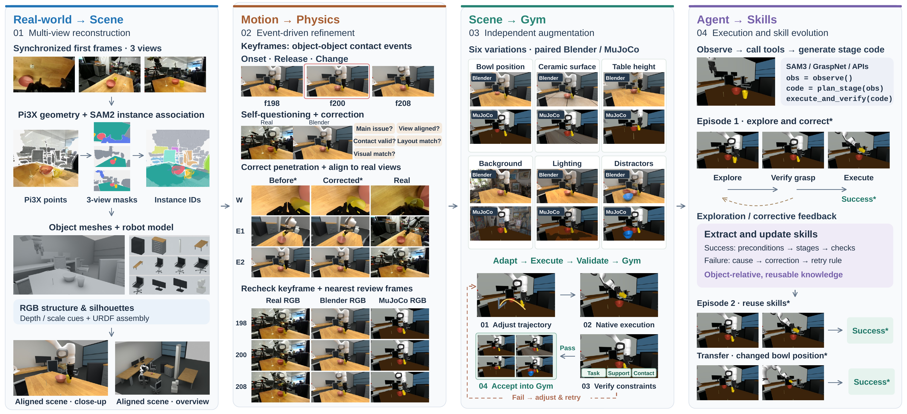
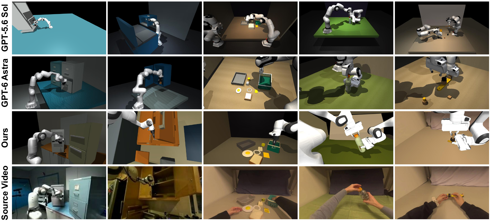
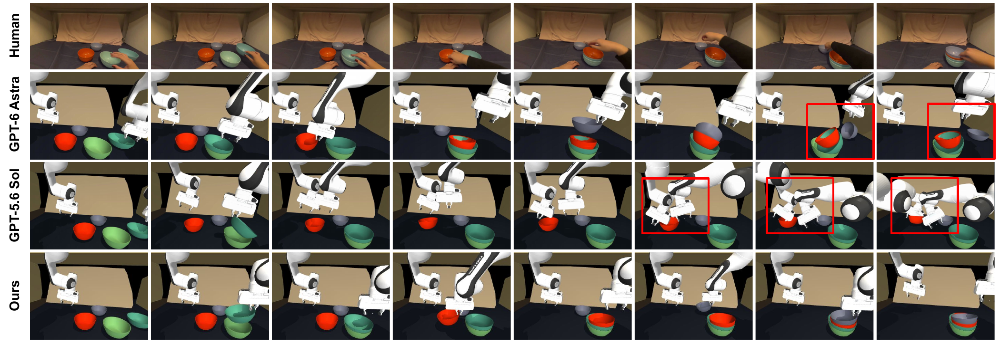
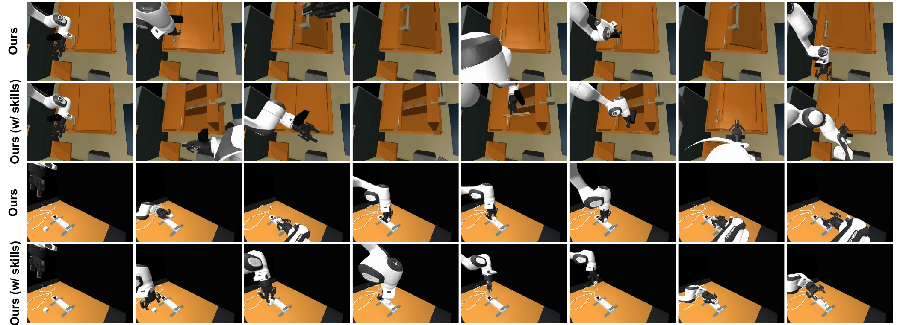

REAL DATA · INTERACTIVE GYMS · REUSABLE SKILLS
Real2Gym: Building Gyms from Videos,
Bringing Skills to Robots
TL;DR Turn human and robot videos into visually aligned, physically interactive gyms. Let agents explore, learn from feedback, and bring reusable skills to real robots.
From real observations to interactive worlds.
24 tasks from DROID and EgoDex. Inspect the scene. Follow the demonstration.
One scene. More possibilities.
Four scenes, six independent variations each.
Observe. Write code. Act.
Explore 18 tasks, one operation stage at a time.
From simulation to the physical world.
Four tasks. GPT-6 Astra and Real2Gym. Two camera views per method.
What changes beyond direct GPT-6 Astra?
- 01 / REAL2SIM
Geometry first.
Refine through execution.Pi3X + SAM2 initialize object-wise point clouds to constrain scene geometry and layout. An iterative self-questioning and correction process refines local discrepancies, producing high-fidelity scenes aligned with fine-grained manipulation.
Object-level initialization → local correction → aligned interaction - 02 / AGENT POLICY
Decide in stages.
Improve through experience.SAM3 and GraspNet improve object localization and grasp generation. Each decision generates code for an entire operation stage, coordinating multiple actions and checks. Successes and failures become reusable skills that guide later execution.
Perception → stage code → feedback → updated skills
Build the gym. Evolve the agent.

Aligned scenes. Effective execution. Reusable experience.



Build on Real2Gym.
@software{real2gym,
author = {Ren, Kerui and Xu, Yingxiang and Song, Kaiwen and Xu, Linning and Dai, Bo and Yu, Mulin and Lu, Tao},
title = {{Real2Gym: Building Gyms from Videos, Bringing Skills to Robots}},
year = {2026},
url = {https://github.com/real2gym/Real2Gym}
}